相较于supervised learning给出成对的data和label，以及unsupervised learning全部给出无label的data，self-supervised learning更像是两者结合的产物，但由于其没有label，因此也可以算作是一种unsupervised learning。其最早出现于Yann LeCun的facebook：
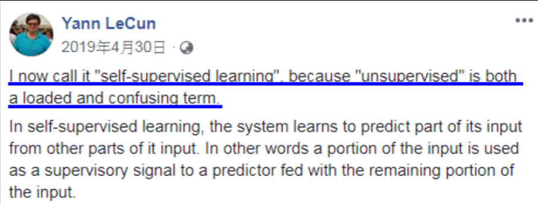
首先需要介绍一下芝麻街，这是一部动画片，self-supervised learning中一部分的Model是以其中人物命名的，包括BERT：
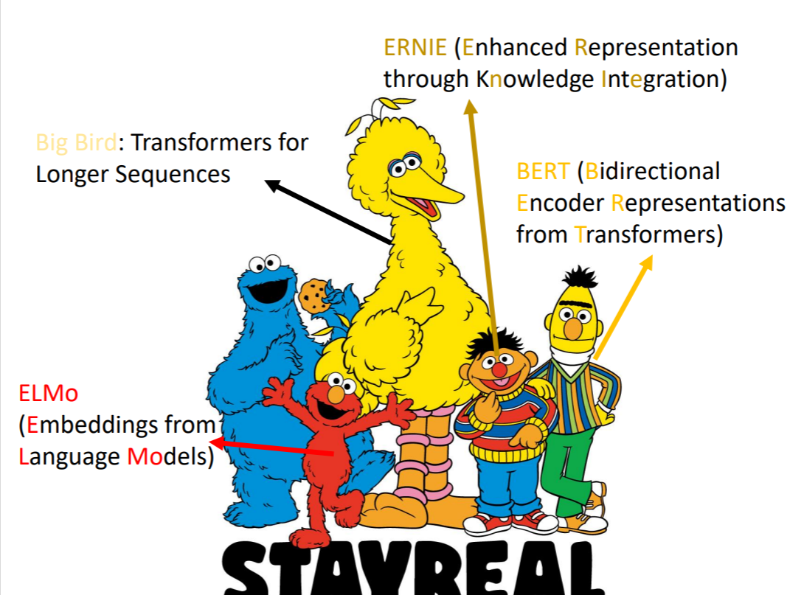
BERT
首先介绍一下BERT。原始paper：《BERT: Pre-training of Deep Bidirectional Transformers for Language Understanding》。它其实就是一个transformer的Encoder，要做的事情就是输入一排vector，输出一排vector。BERT是一个有340M parameters的巨大模型：
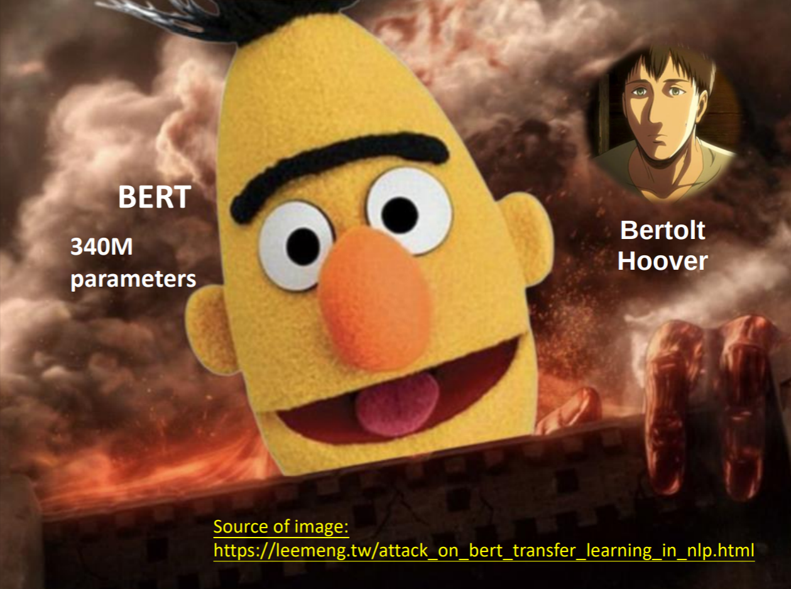
他的input是Masking Input，简单来说有两种做法：
- 用一个special token随即盖住一些token；
- 用一些随机的token随即替换一些token。
BERT要做的就是预测这些Masking的token。盖住部分对应的output经过了linear和softmax后得到一个distribution，训练的目标是output和原始Masking的部分越接近越好。
在大多情况下，BERT只是作为一个Pre-train的Model，要在上面进行Fine-tune（微调），做更多的Downstream Tasks。因为实际上BERT训练的就是一个做“填空题”的Model，但进行了fine-tune后可以做更多事。
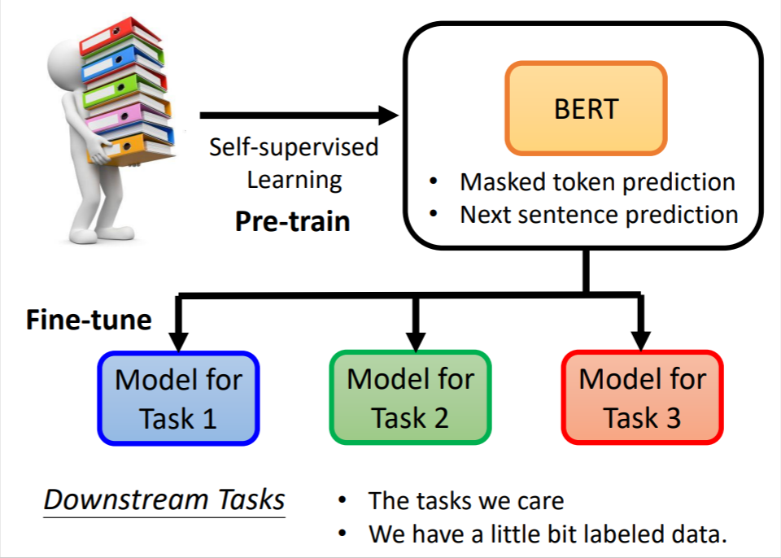
例如，我们可以用BERT判断两个句子是不是连在一起的。我们需要将两个句子拼起来，中间加一个SEP token表示分隔，最开始加一个CLS token用于生成答案。
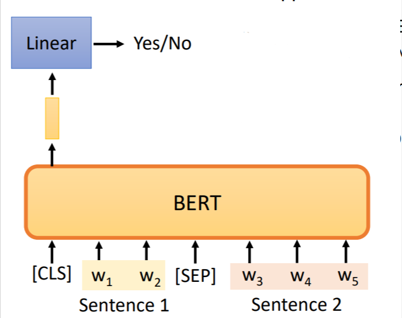
对于BERT的评判，由于其更像是一个“胚胎干细胞”，他的作用就是产生各种各样的Model用作不同的downstream tasks，因此对其的评判需要多种多样。GLUE（General Language Understanding Evaluation）就是一个较官方的评判集，有多个任务可以判断Language Model的好坏。
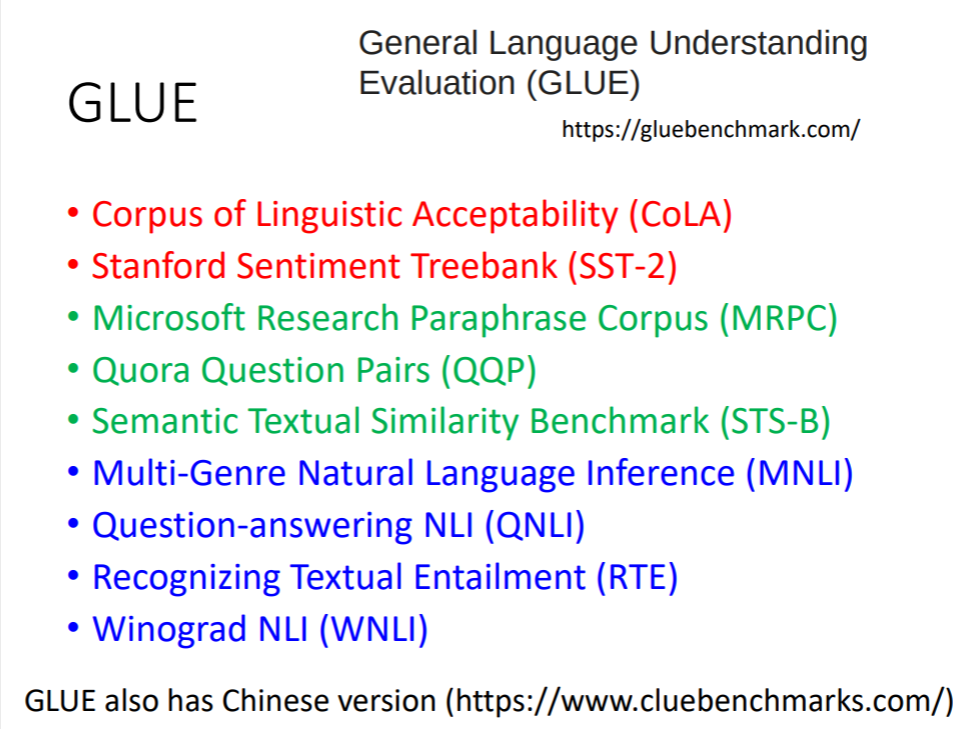
下图是一些类似BERT的Model的GLUE score的对比图：
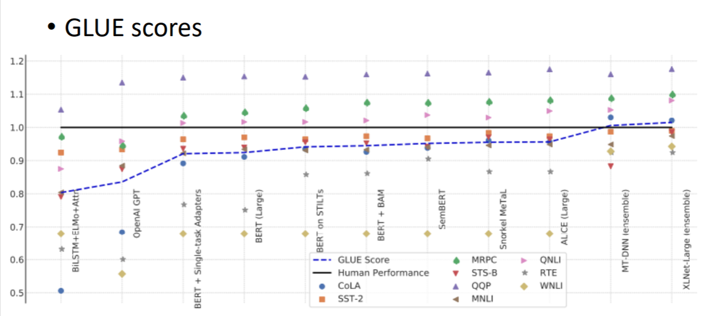
来源：《SuperGLUE: A Stickier Benchmark for General-Purpose Language Understanding Systems》
Examples
下面是一些BERT应用的举例
Sentiment analysis
输入一个seq，输出一个class。例如Sentiment analysis。
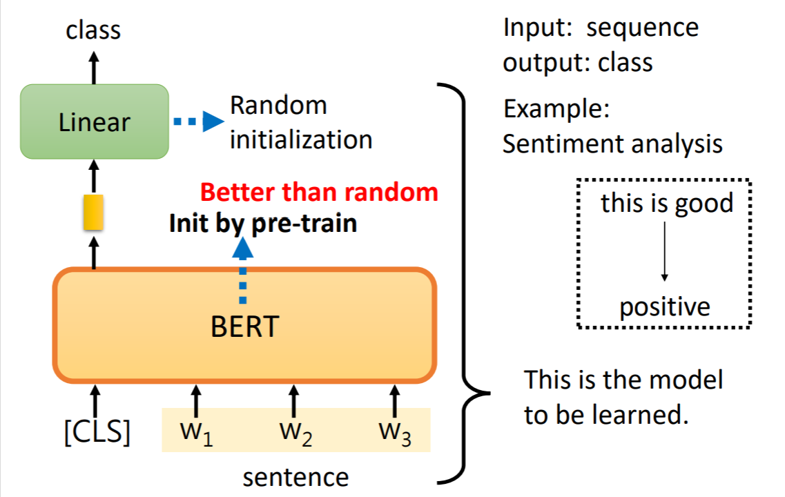
我们需要在CLS的output上加一些额外的东西，作为我们的fine-tune。这样一个大的Model是我们要去train的，但其中BERT的部分是pre-train的，额外加的部分是随即初始化的。
[scode type=”yellow”]为什么要Pre-train
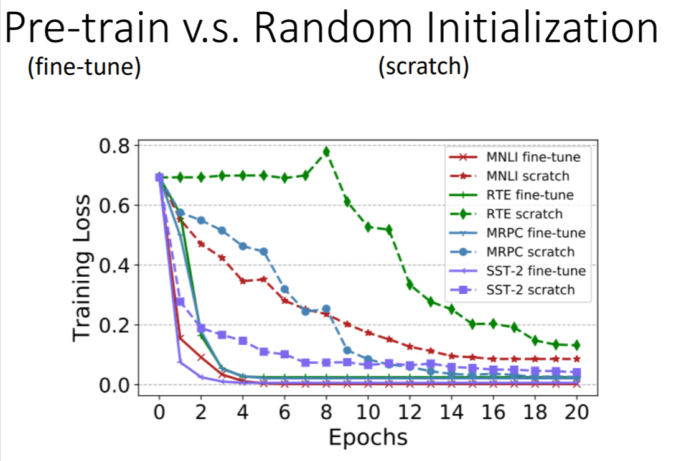
不难看出，pre-train的Model效果明显要好于随机初始化BERT的。[/scode]
POS tagging
输入一个seq，输出相同数量class，例如POS tagging。
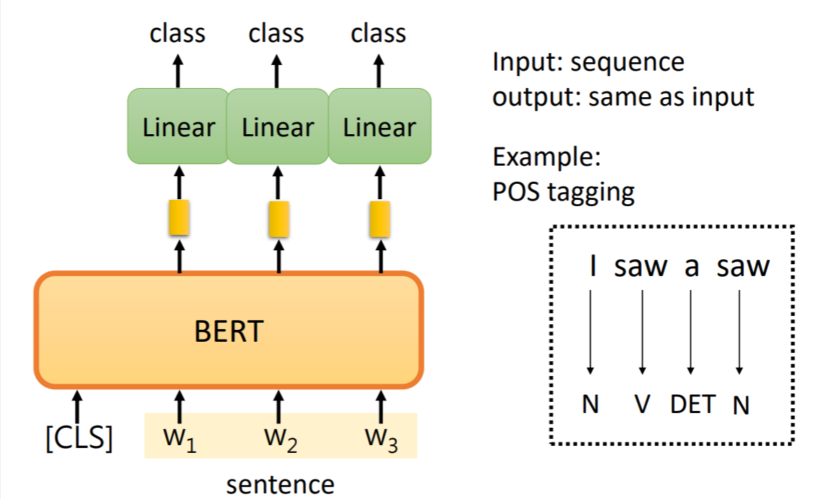
Natural Language Inference(NLI)
输入两个seq，输出一个class。例如NLI。以下是一个例子，输入一个句子作为前提，一个句子作为假设，判断两个句子是否矛盾。
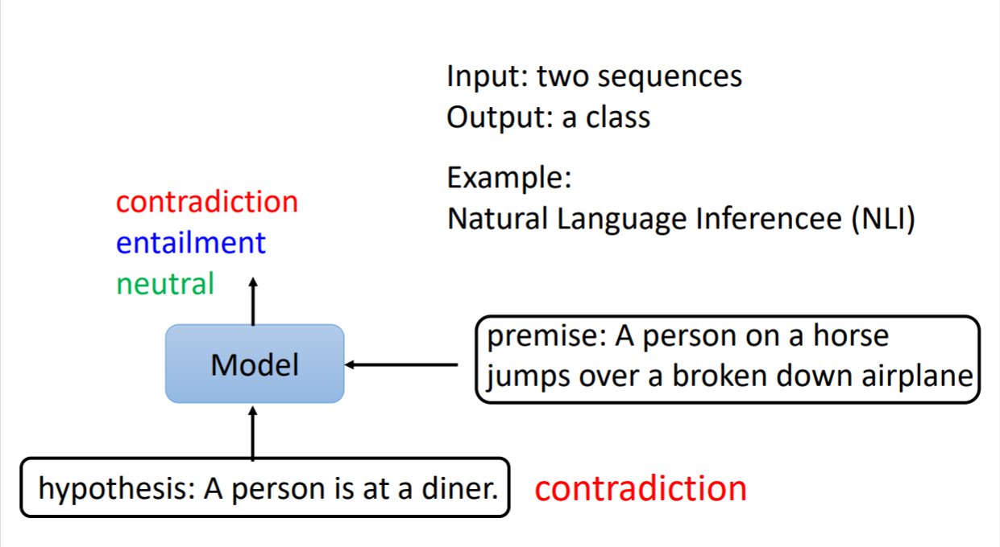
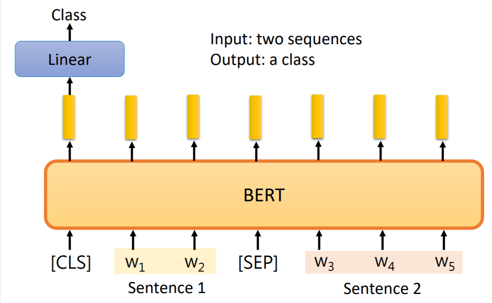
QA
我们还可以输入一篇文章，再输入一个问题，最后输出问题的答案。
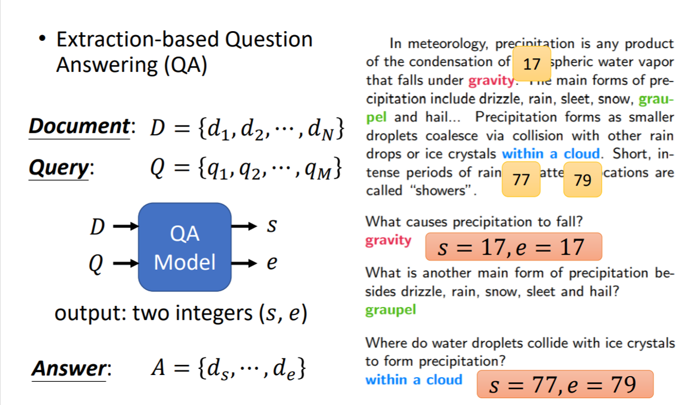
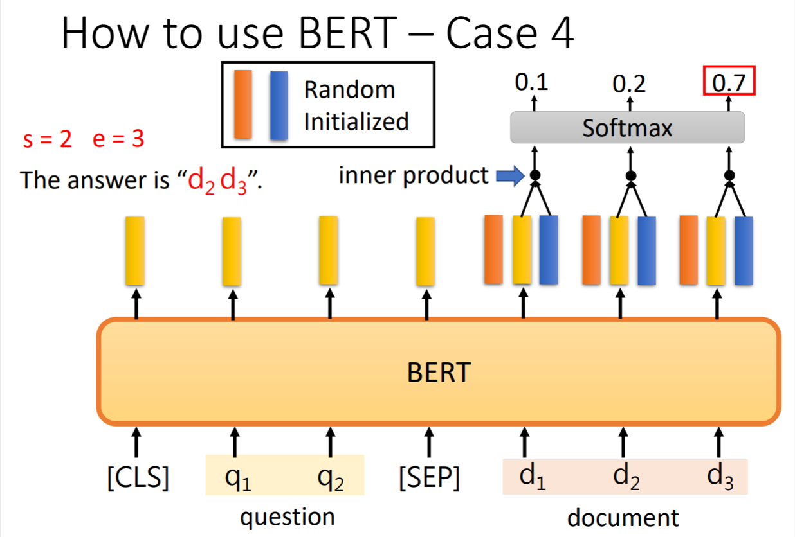
但这个做法有些局限性，回答是出自文章的原句，不会自己产生其他的回答。
other knowledge
- BERT实际上是很难训练的，因为其Model非常大。这篇paper讲了BERT训练的过程，探究了在训练过程中BERT究竟学到了什么：《Pretrained Language Model Embryology: The Birth of ALBERT》
- BERT实际上是pre-train了一个transformer的Encoder，我们也可以pre-train Encoder和Decoder，也就是一个会做填空题的seq2seq的Model。
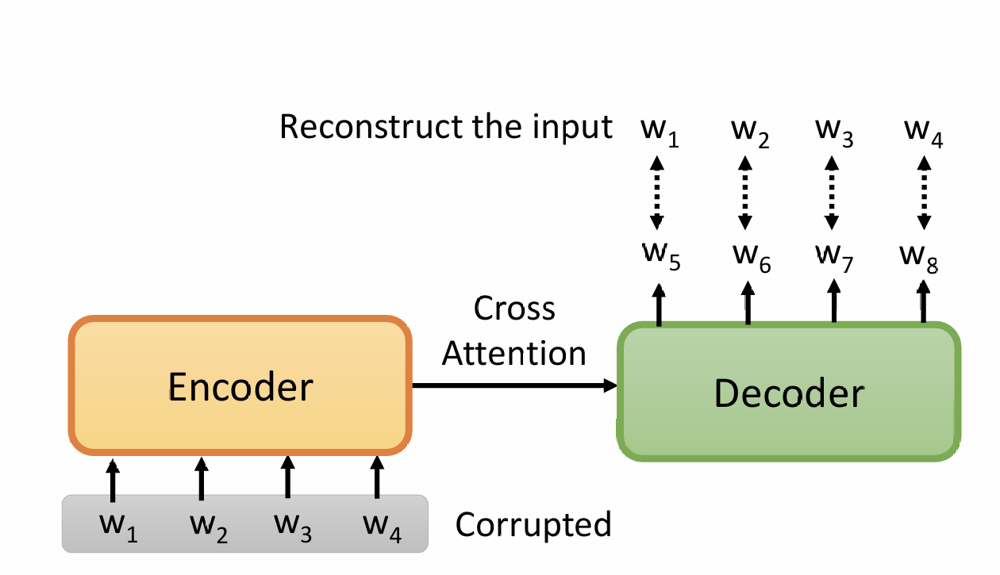
实际上，对于pre-train seq2seq，masking的方法有很多。这篇paper介绍了多种MASS的方法：《MASS: Masked Sequence to Sequence Pre-training for Language Generation》，这篇paper使用了上述方法pre-train了一个seq2seq：《BART: Denoising Sequence-to-Sequence Pre-training for Natural Language Generation, Translation, and Comprehension》 - 惊人的发现，用一种语言fine-tune BERT，然后用另一种语言去test，居然也能在一定程度上起效果：
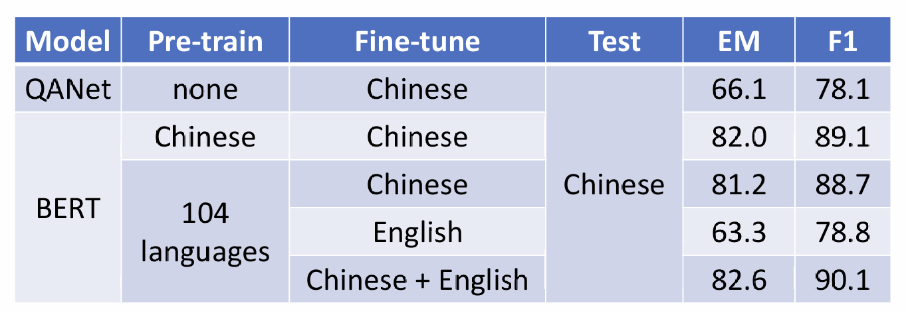
来源：《Zero-shot Reading Comprehension by Cross-lingual Transfer Learning with Multi-lingual Language Representation Model》Why does BERT work?
在BERT中，每一个token都被处理为了一个vector，这个vector叫做embedding，代表了这个token的意思。相近意思的token，其embedding也更加接近：
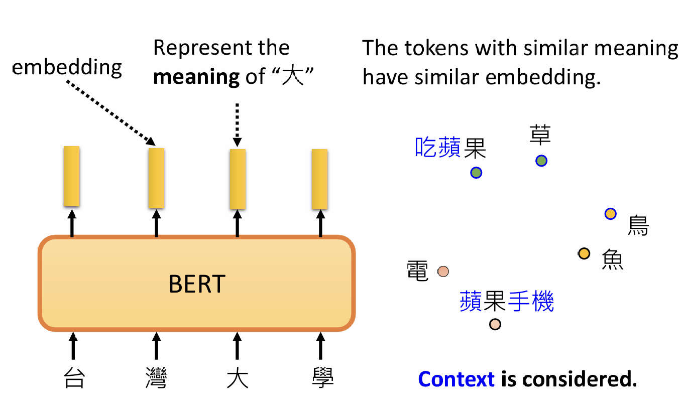
可以看到，同一个token在不同的语境下，其embedding也不相同。这种考虑了语境（即上下文）的embedding叫做contextualized word embedding。一种可能的解释为，BERT在训练的过程中学到了token的意思，但一篇paper中用BERT做了蛋白质的分类，也起到了很好的效果，因此BERT在train中做的事情可能不止于此：《Is BERT a Cross-Disciplinary Knowledge Learner? A Surprising Finding of Pre-trained Models’ Transferability》